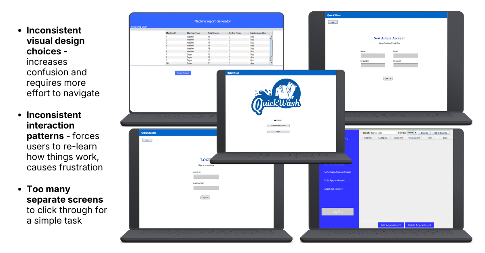
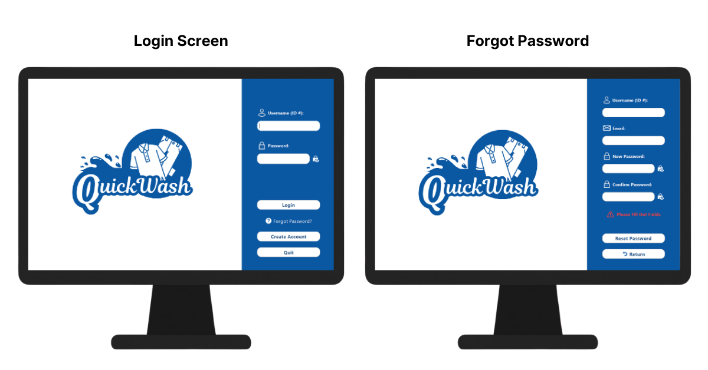
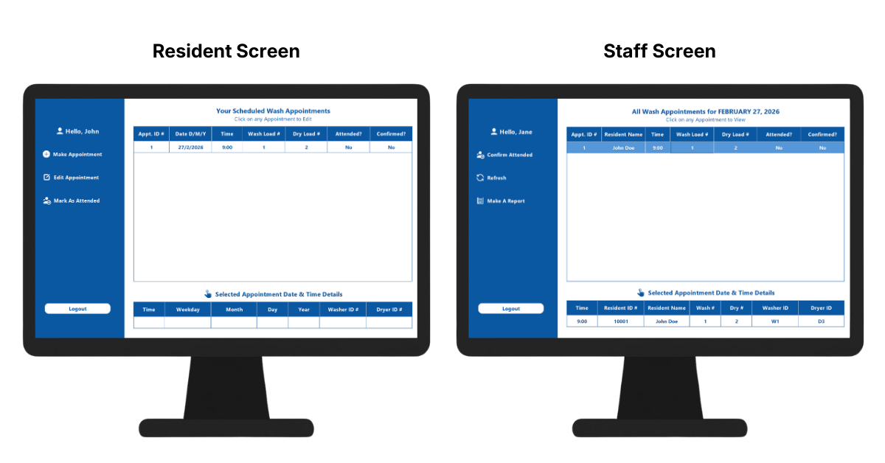
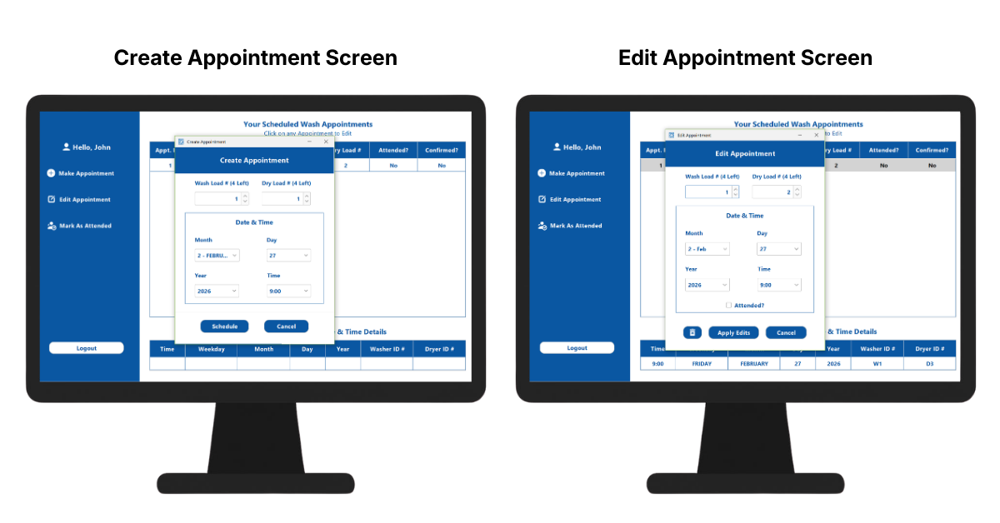
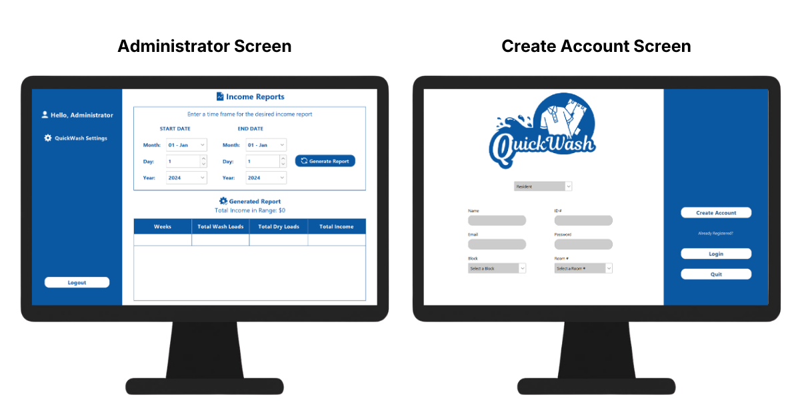
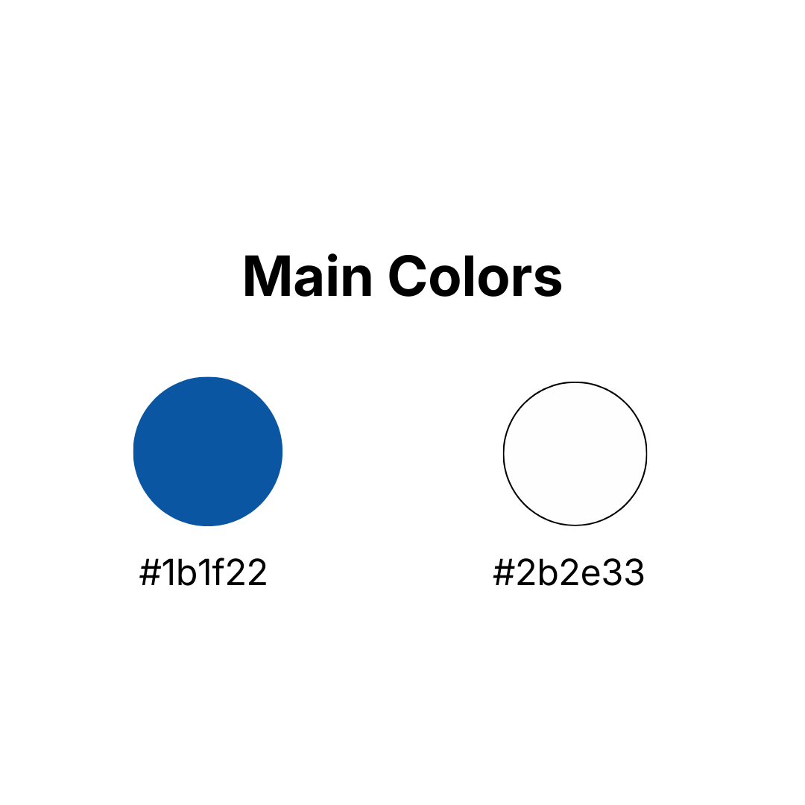

Project Details
QuickWash
-
Type
University Project
-
Roles
UI/UX Designer, Front-End Developer
-
Date
April 2024
-
Tools
Canva, Java, PostgreSQL
-
Project Link
About This Project
QuickWash is a laundry appointment scheduling system intended to alleviate the laundry issues at the George Alleyne Hall at the University of the West Indies (UWI) Mona campus.
This project was an exploration of a possible desktop solution to target the inefficiencies of the current system.

The Problem.
138 Student Living Jamaica Limited (138SL) is a Jamaican company that provides student accommodations at the UWI Mona campus, including the George Alleyne Hall.
As part of the accommodations, 138SL provides laundry services to its residents.
However, many George Alleyne Hall residents find these laundry services tedious to navigate.
- Tokens must be presented in order to set a wash appointment.
- Residents must purchase these tokens in person, a difficult task for the average busy University student.
- Additionally, these tokens can only be purchased using cash or Lynk, adding an extra hurdle.
My team attempted to tackle this issue by creating a laundry scheduling system that would streamline this process.
My main contribution was to help refine and develop the look and feel of the system.
Constraints
- Since we were an independent team without official support from the company, we were limited by the short development time frame, skill levels of the members, as well as what was possible to accomplish with our limited resources.
- Sometimes we had to make decisions that were realistic, but not the most ideal solution for the issue at hand.
- Additionally, using the built in Java UI libraries limited the possiblities of what could be easily achieved in the implementation of the design, affecting design decisions.
The System's Needs
The current system involves interactions between 3 main types of people:
- The Resident - books and modifies wash appointments
- The Staff - services wash appointments, reports issues with the machines using an external system
- The Manager/Supervisor - collects reports on generated income from wash appointments
The proposed system would be designed to support these activities for each type of user.

Photo by Anton Savinov on Unsplash
Research
The team members had conducted this phase before I joined the team, so I was not as involved here.
However, this process involved getting first hand accounts from a team member that lived on the affected George Alleyne Hall (among others) to understand the current way things were done and what the day to day of each type of user looked like.
This would be later mapped to how they needed to interact with the system.
Revamping QuickWash's Design
When I was brought onto the team, the project had fragmented designs across different screens. This was due to how the workload was initially split among the team.
Key features of the old design:

The Core Implementations:
- Login Screen - ensure secure access to the system
- Create User Screens - add different user types to the system
- Resident Screen - options to add and edit wash appointment details
- Staff Screen - options to view wash appointments, make machine reports
- Admin Screen - options to create and view wash income reports
Revamped Design
As I reviewed the designs and set to work on creating a new design, my focus was on reducing redundancies and creating a straightforward, cohesive user interface and experience that borrowed the best elements of previous iterations.

The interface was generally revamped to have a consistent structure and design. Icons were included to enhance its readability and approachability.
Welcome/Login Screen Key Changes:
- Centralized access to all user management into a single screen: login, create account, forgot password
- Added button to toggle password visibility to make login easier

Resident & Staff Screen Key Changes:
- Kept all appointment management features to the left to improve identification of related actions
- Added section to display appointment details to reduce clutter after more data fields were added

Appointment Management Screens Key Changes:
- The screens were reduced to a small concise popup window
- The screens are designed to look similar to increase ease of navigation

Create Account Screen Key Changes:
- Centralized the creation of all 3 account types into a single screen
- Quick navigation back to login
Visual Design Decisions
Since the application revolves around the concept of cleanliness, organization and water, I chose colors and designs that complimented that idea.

- The saturated blue was pulled from the pre-existing logo design in an attempt to both increase cohesion in the design and represent water.
- Using white as the main color allows for good contrast with that blue, while evoking that feeling of something sterile and clean.
- Boxy shapes were used throughout the UI to create that sense of structure and order.
- The Create and Edit Appointment Screens were designed to resemble washing machines.
Reflection
My biggest takeaways from working on QuickWash would be that:
- Stepping into a role for an existing project really tested my ability to adapt. I had to not only get up to speed by quickly getting through documentation, I had to ask the right questions. Once I had an understanding, I had to build on the project in a way that demonstrated that I understood what we were trying to achieve.
- Due to the limitations of what was supported by Java's built-in UI libraries, I had to design an interface that played into the strengths of the software. This involved researching designs of software created with the technology as well as finding creative solutions to achieve a more modern look and feel.
- While the initial design of the interface was fragmented, these previous attempts gave me a better understanding of how we were trying to solve the problem from multiple perspectives. I was very intentional to pull the best parts from each attempt to create a design that was more unified in how it communicated with the user, but was still clearly built on the progress of previous iterations.
- The fragmentation itself taught me the importance of establishing a single visual direction before a team splits design work. This saves a lot of rework down the line.
Explore Another Project: